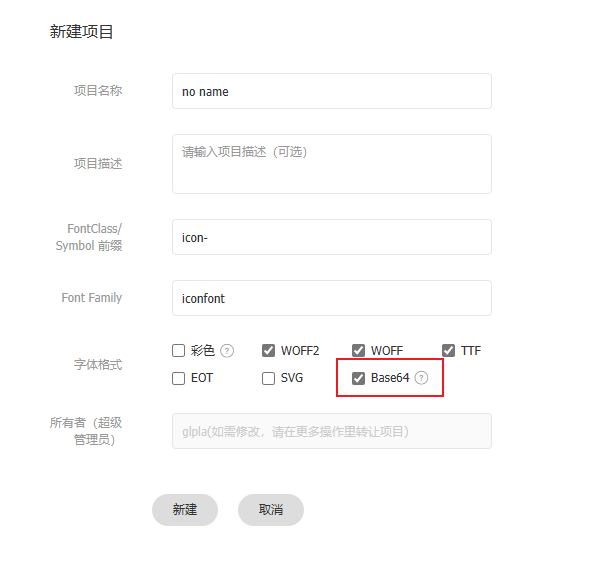

. 以字体图标|文字的形式呈现图像，多用于图标，可以取代精灵图的部分应用
. 在线使用、本地使用
. 可以按照 Unicode、Class 和 Symbol 三种方式使用图标
. 可以使用 <i> 或者 <span> 作为字体容器；甚至可以使用 <div>
. 可以使用彩色图标
. 每次往项目中添加、删除字体图标时，都需要重新更新一下 CSS 资源
. 图标类名字区分大小写
. 更多使用细节，请参考官方文档
注册|登陆：打开阿里字体
https://www.iconfont.cn，创建账户
创建项目；也可以在收集完图标后再创建；
. 部分环境，如微信小程序需要 base64 的格式，请在项目设置中勾选
. 可以修改字体图标前缀和字体家族，默认是 icon- 和 iconfont
查找图标：搜索并选择字体图标；添加到购物车[免费]；如果需要使用图片，可以直接下载为图片格式
将购物车中的字体图标添加到项目；或上传图标至项目：将自己设计的 svg 格式的图标引入；适合设计能力比较强的小伙伴；需要审核
更新并生成链接；可以下载到本地使用[推荐]；也可以在线使用